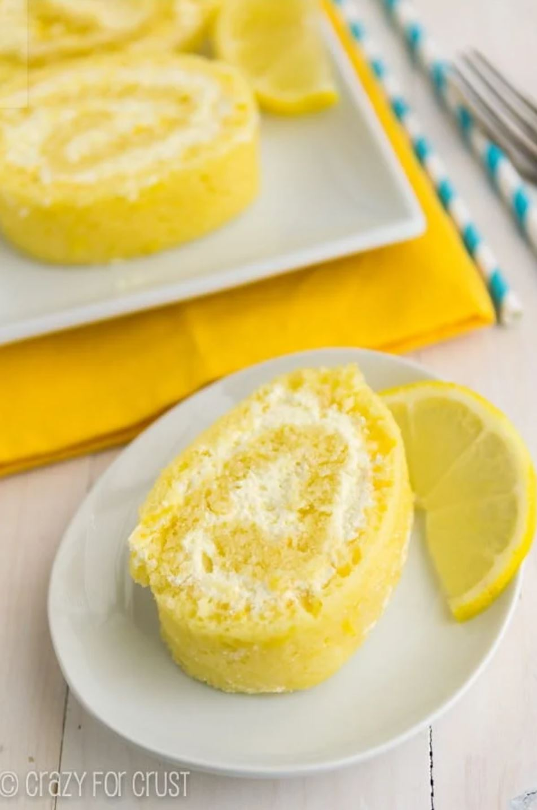
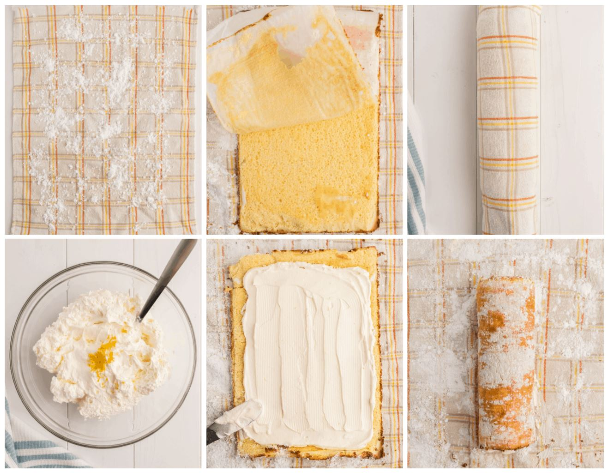
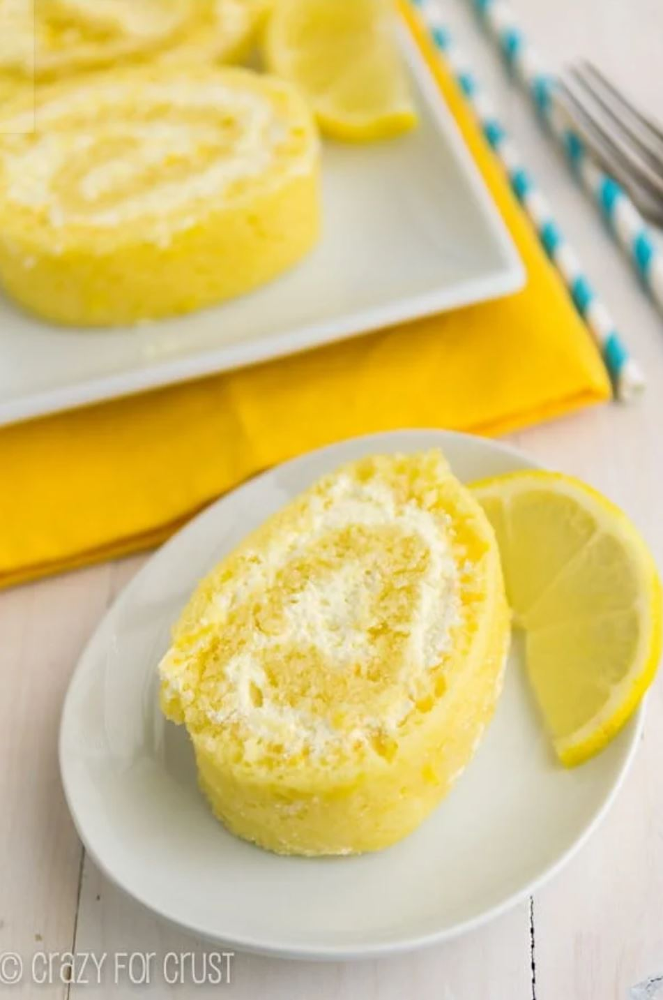
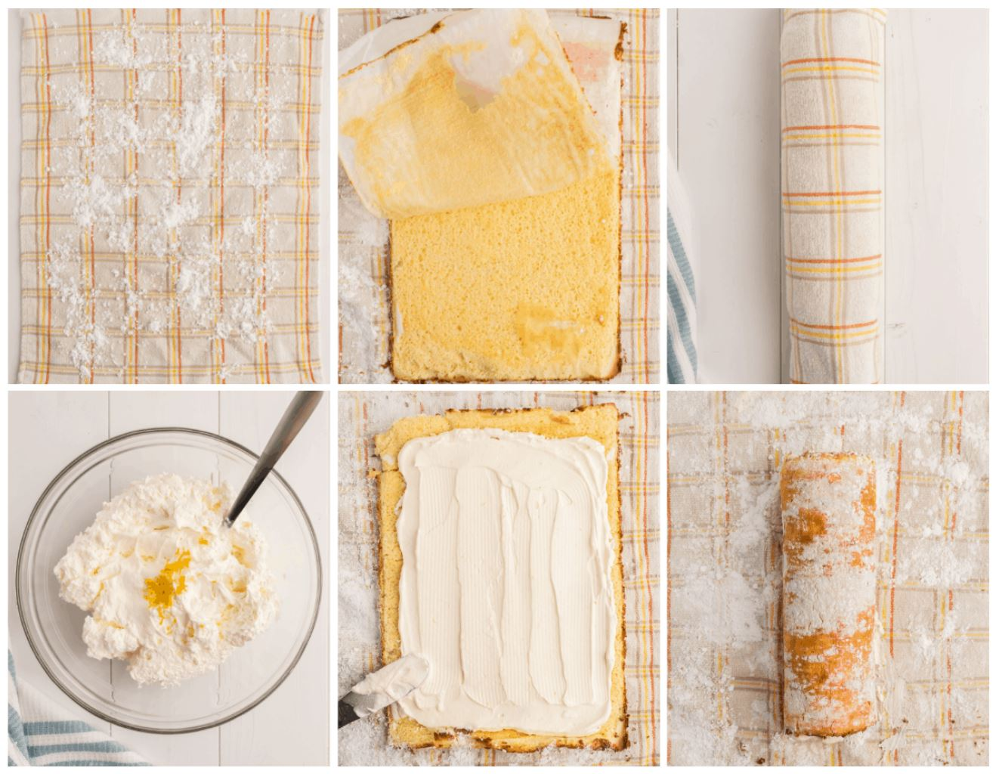
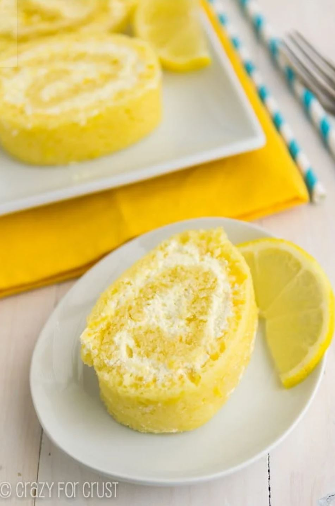
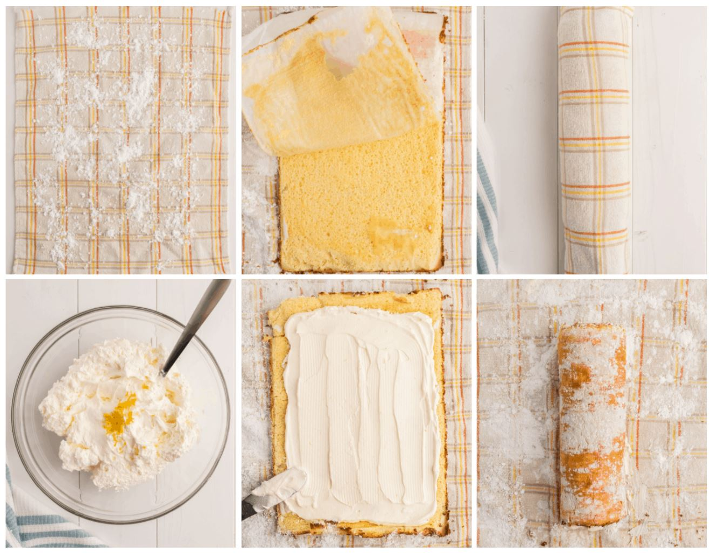

Sample Imagery
 



Lemon in every bite! Lemon cake and lemon whipped cream filling make this the perfect cake roll for any occasion.
*You should use a jelly roll pan. This pan will yield the best results for a roll cake, but you can try any flat sheet pan.
Common Allergens: eggs, dairy, gluten, wheat
Source: https://www.crazyforcrust.com/lemon-cake-roll/
Research Evalution: https://docs.google.com/document/d/1W_Jui_-IC8fXWOSpynHasY4HqqnIFCerVlKy1SccK50/edit?usp=sharing

